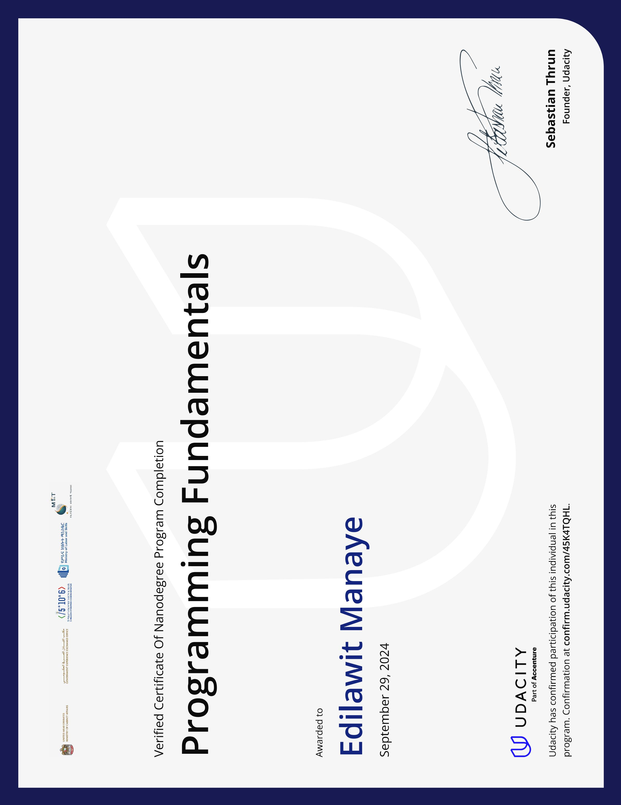
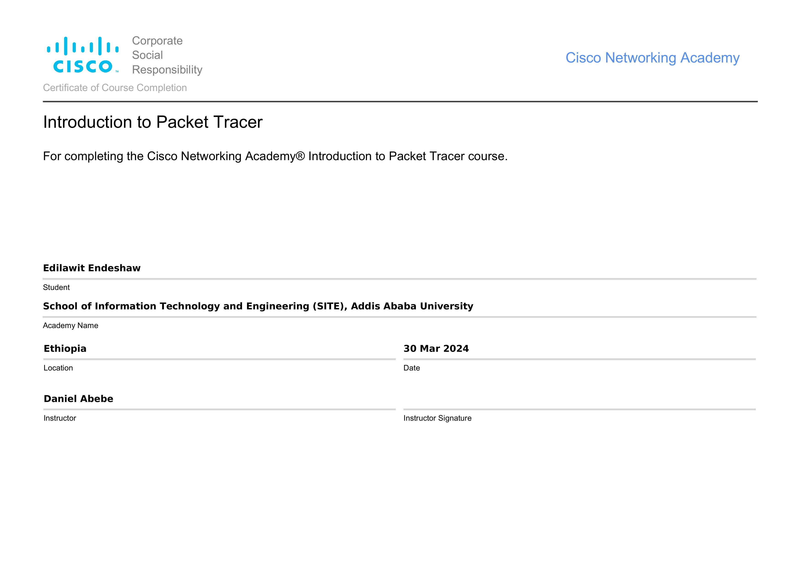

about this cerificate
I am certified in the Udacity Nanodegree for Programming Fundamentals, specializing in HTML, CSS, and JavaScript. This course provided me with essential skills to create responsive web applications.

about this cerificate
a two days traing focuse on digital literacy and basic computer literacy training prepared by AAU club.

about this cerificate
I completed the course which is known as introduction of packert tracer.
Below are some of my notable works.
| Project | Description | Technologies |
|---|---|---|
| Online Voting System | A secure platform for conducting elections. | HTML, CSS, JavaScript |
| Student Dormitory Service | A service for managing dormitory accommodations. | MySQL |